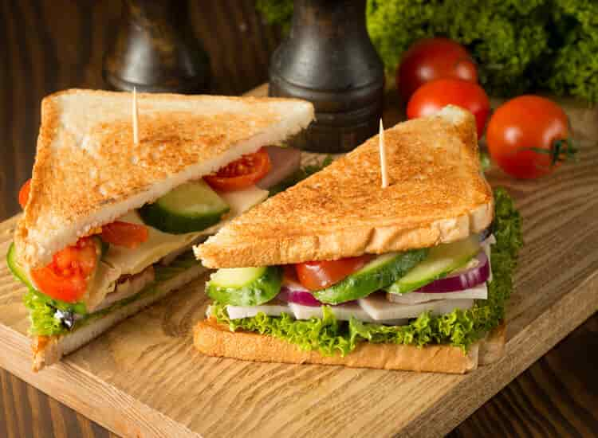

chicken
Food is any substance nutritional support for an organism.
Food of plant, animal, or fungal origin, and contains essential
nutrients, such as , fats, proteins, vitamins, or minerals.

pancake
Food is any substance consume support for an organism.
Food is usually of plant, animal, or fungal origin, essential
nutrients, such as vitamins, or minerals.

sandwhic
Food is any substance consumed nutritional support for an organism.
Food is usually of plant,and contains essential
nutrients, such as carbohydrates, vitamins, or minerals.